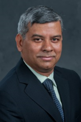
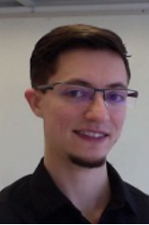
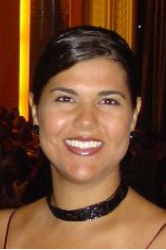
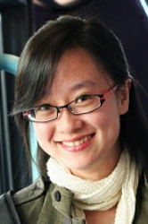
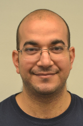

We are pleased to announce SSBSE 2016, the eight edition of the annual symposium dedicated to Search Based Software Engineering (SBSE), to be held in Raleigh, North Carolina, USA. Search-based Software Engineering (SBSE) studies the application of meta-heuristic optimization techniques to various software engineering problems, ranging from requirements engineering to software testing and maintenance.
The symposium builds on the flourishing interest in SBSE and provides a welcoming forum for discussion and dissemination that will strengthen the rapidly-growing international SBSE community.
SSBSE 2016 will be collocated with 32nd IEEE Conference on Software Maintenance and Evolution (ICSME2016).
SSBSE 2016 will be held at the Holiday Inn Raleigh Downtown. We have reserved a block of rooms at the Holiday Inn Raleigh Downtown at a special conference rate of $99 for SSBSE2016.
IMPORTANT DATES (AoE)
RESEARCH PAPERS TRACK
Abstract submission - April 20, 2016
Paper Submission - April 27, 2016
Notification - June 07, 2016
SHORT PAPERS TRACK – GRADUATE STUDENT PAPERS TRACK – SBSE CHALLENGE TRACK
Submission - May 23, 2016
Notification - June 17, 2016
Camera Ready - June 23, 2016
Submission site: https://easychair.org/conferences/?conf=ssbse2016
RESEARCH PAPER TRACK
We invite the submission of high quality papers describing novel and original work in all areas of Search-Based Software Engineering including, but not limited to, applications of SBSE to novel problems, theoretical analyses of search algorithms for software engineering, rigorous empirical evaluations of SBSE techniques, and reports of industrial experiences.
SSBSE welcomes not only applications from throughout the software engineering lifecycle but also a broad range of search methods ranging from exact Operational Research techniques to nature-inspired algorithms and simulated annealing.
We particularly encourage papers that report on software engineering applications to which SBSE has not been applied before. Research papers must have up to 15 pages in length, including all text, figures, references and appendices. The SSBSE Research Paper Track performs double-blind review of all submissions (i.e., authors will not be identified to reviewers and reviewers will not be identified to authors).Please consult the submission information page to prepare your manuscript for double-blind process.
SHORT PAPER TRACK
We invite short papers presenting new ideas, tools, experience reports, or novel techniques and ideas, which will be included in the proceedings and presented at the symposium. Papers submitted to this track should not exceed 6 pages in length using the regular symposium format.
GRADUATE STUDENT TRACK
We invite students to submit papers to a special Graduate Student track. This track gives students the opportunity to showcase their SBSE research and receive feedback from senior members of the SBSE community.
Papers submitted to this track should not exceed 6 pages in length using the regular symposium format. To be eligible, papers should be primarily the work of students currently registered on a doctoral or master program that have not yet completed their studies.
The paper may have co-authors who are not students but the student author is expected to present the paper at the symposium.
SBSE CHALLENGE TRACK
We challenge everyone interested in SBSE to apply their tools, techniques, and algorithms to our selected problems. We want you to apply your SBSE expertise to do interesting things to or with the software and uncover interesting things related to it.
The best competition entries will be awarded special prizes. Challenge papers should not exceed 6 pages in length using the regular symposium format.
FORMAT AND SUBMISSION
Papers must not have been previously published, or be in consideration for, any journal, book, or other conference. Papers will be evaluated by members of the program committee based on their originality, technical soundness and presentation quality. Submissions must conform to Springer’s LNCS format (http://www.springer.com/lncs). Further information on paper formatting and submission are available here. If a paper is accepted, at least one author is expected to attend the symposium and to present the paper. In case of a student paper, the first (student) author is expected to attend and present the paper.
CONFERENCE PROCEEDINGS
Accepted papers will be published in a volume of the Springer Lecture Notes in Computer Science series (LNCS).
BEST PAPER AWARDS AND TRAVEL GRANTS
Research and Student papers accepted for presentation at SSBSE 2016 will be considered for prizes.
SPECIAL ISSUE FOR BEST PAPERS
The authors of best selected papers will be invited to submit extended versions of their papers for a special section in the International Journal of Information and Software Technology (IST).
Submission site: https://easychair.org/conferences/?conf=ssbse2016
GENERAL INFORMATION AND FORMAT
Papers must not have been previously published, or be in consideration for, any journal, book, or other conference.
Papers must be formatted according to the LNCS instructions (http://www.springer.com/lncs). In addition to those instructions, please consider that SSBSE is performing double-blind review of all submissions, but those for the SBSE Challenge track (i.e., authors will not be identified to reviewers, and reviewers will not be identified to authors; see here for more information). We therefore ask that authors anonymize their submissions:
Authors of accepted papers will be able to modify the text to de-anonymize for the camera-ready version of their papers. Feel free to contact the PC chairs (Marouane, Federica and Kalyan) if you have any questions or concerns.
SUPPORT
| GENERAL CHAIR | |||||
|---|---|---|---|---|---|

Marouane Kessentini |
|||||
| PROGRAM CHAIRS | |||||
| 
Kalyanmoy Deb |

Federica Sarro |
||||
| SBSE CHALLENGE TRACK CHAIRS | |||||
| 
Leandro L. Minku |

Tanja E.J. Vos |
||||
| GRADUATE STUDENT TRACK CHAIRS | |||||
| 
Thelma Elita Colanzi Lopes |

Ali Ouni |
||||
| PUBLICITY CHAIR | |||||
| 
Yuanyuan Zhang |
|||||
| WEB CHAIR | |||||
| 
Wiem Mkaouer |
|||||
STEERING COMMITTEE
Andrea Arcuri, Scienta, Norway, and University of Luxembourg (until 2018)
Claire Le Goues, Carnegie Mellon University, USA (until 2017)
David White, University of Glasgow, UK (until 2016)
Federica Sarro, University College London, UK (until 2018)
Gordon Fraser, University of Sheffield, UK (until 2018, second consecutive term)
Jerffeson Souza, University of the state of Ceara, Brazil (until 2017, second consecutive term)
Marcio de Oliveira Barros, Federal University of the state of Rio de Janeiro, Brazil (until 2017)
Mark Harman, University College London, UK (SC Chair) (until 2016, second consecutive term)
Shin Yoo, Korea Advanced Institute of Science and Technology, Korea (until 2018)
Yuanyuan Zhang, University College London, UK (until 2016)
PROGRAM COMMITEE
Alessandra Gorla, IMDEA Software Institute
Andrea Arcuri, Scienta – University of Luxembourg
Arilo Dias-Neto – Federal University of Amazonas
Chris Simon, University of the West of England
Claire Le Goues, Carnegie Mellon University
Dongsun Kim, University of Luxembourg
Francisco Chicano, University of Málaga
Gregory Gay, University of South Carolina
Giuliano Antoniol, École Polytechnique de Montréal
Gordon Fraser, University of Sheffield
Houari A. Sahraoui, University of Montreal
Jerffeson Teixeira de Souza, State University of Ceara
Jerry Swan, University of York
John Clark, University of York
Juan Pablo Galeotti, University of Buenos Aires
Justyna Petke, University College London
Lars Grunske, University of Stuttgart
Marcio Barros , Universidade Federal do Estado do Rio de Janeiro
Mark Harman, University College London
Marc Roper, University of Strathclyde
Myra Cohen, University of Nebraska
Nadia Alshahwan, J.P. Morgan
Paolo Tonella, Fondazione Bruno Kessler
Phil McMinn, University of Sheffield
Raluca Lefticaru, University of Bucharest
Shaukat Ali, Simula Research Laboratory
Shin Yoo, Korea Advanced Institute of Science and Technology
Tim Menzies, NC State University
Yuanyaun Zhang, University College London
Zheng Li, Beijing University of Chemical Technology
SSBSE CHARTER
SSBSE has an well-documented charter and organises itself with an open democratic process. You can view the entire conference charter here.
Departamento de Computación
Cornell University
Registration is open (early registration ends on August 20th).
| Early Regular | $450.00 |
| Early Regular – discounted for ICSME attendees | $400.00 |
| Early Student | $350.00 |
| Early Student – discounted for ICSME attendees | $325.00 |
| Late Regular | $490.00 |
| Late Student | $400.00 |
| Extra banquet fee | $80.00 |
SSBSE 2016 will be held at the Holiday Inn Raleigh Downtown. We have reserved a block of rooms at the Holiday Inn Raleigh Downtown at a special conference rate of $99 for SSBSE2016.
Known as the City of Oaks for its many oak trees, Raleigh is the capital of the state of North Carolina and part of the famous Research Triangle, which is a major center for high-tech and biotech research. Raleigh’s historic landmarks and cosmopolitan offerings, from prominent public museums to a diverse culinary scene, make it a one-of-a-kind cultural and entertainment center of the Southeastern US.
Downtown Raleigh offers myriad activities from dining at over 165 restaurants or bars, browsing through over a dozen museums and art galleries, or shopping for clothing or antiques. Southern Living calls Raleigh one of the “Top 10 Tastiest Towns in the South” with a culinary scene featuring award-winning chefs and gaining national recognition. Nightlife in Raleigh is known for its numerous live music venues and for its selection of local craft brews. Downtown Raleigh is easy to navigate with the R-LINE, a free and eco-friendly circulator service featuring hybrid electric buses that run every 10–15 minutes.
320 Hillsborough Street, Raleigh, North Carolina 27603
Phone: (919) 832-0501
Fax: (919) 833-1631
{kind=link}
{kind=link}
{kind=link}
{kind=link}
{kind=link}